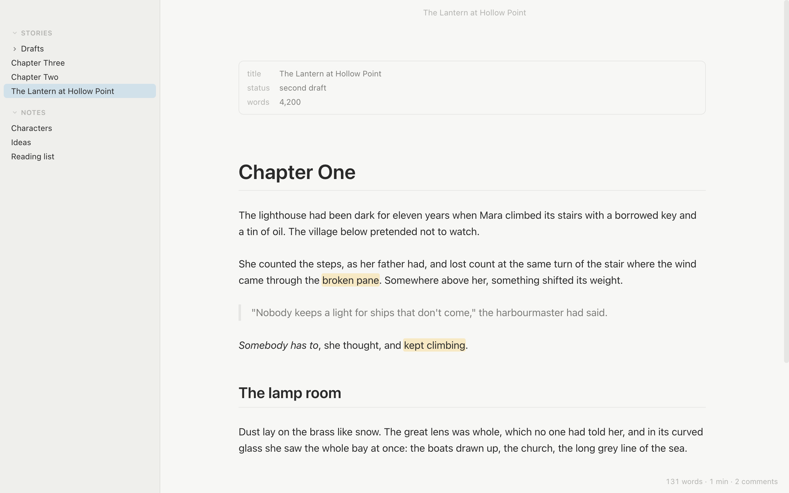
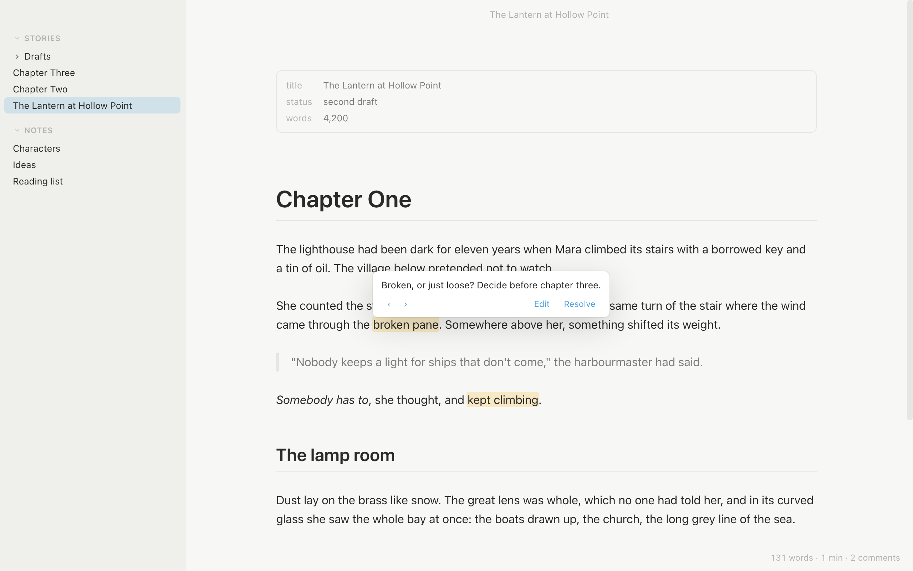
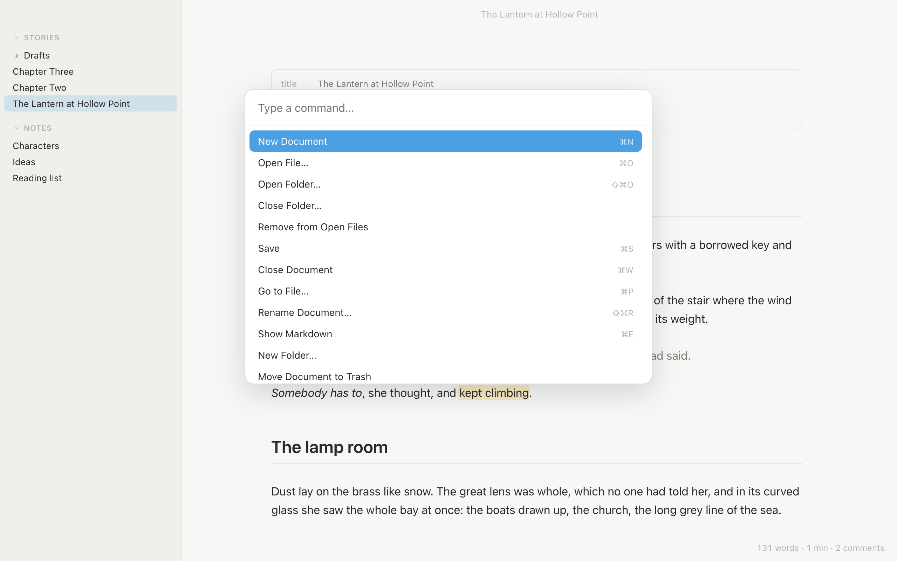
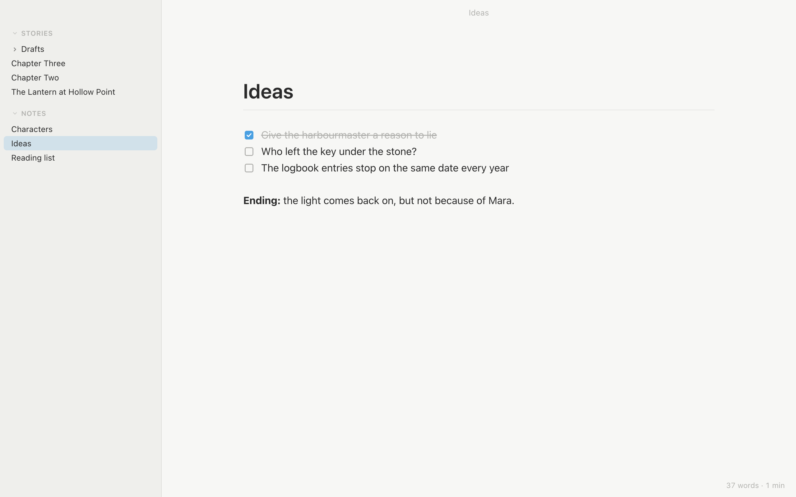
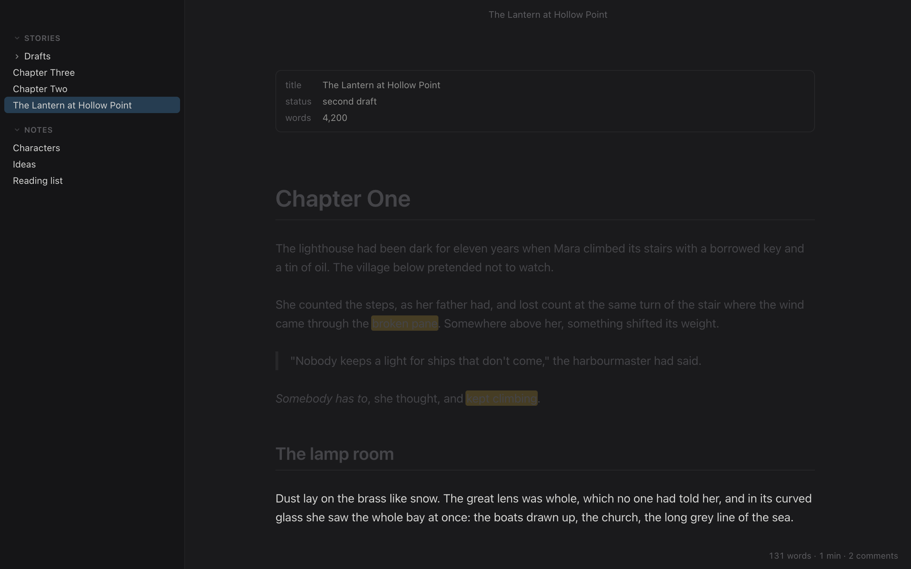

Formatted as you write
Headings, emphasis, lists, links, tables and images show as they will read. The Markdown appears only on the line you're editing. Press ⌘E to see all of it.
A quiet Markdown editor for Mac.
Write stories and notes in plain Markdown files. Typr formats them as you type and gets out of the way, and you can do everything from the keyboard.
Free · Apple silicon (M1 or later) · macOS 12 or later

Headings, emphasis, lists, links, tables and images show as they will read. The Markdown appears only on the line you're editing. Press ⌘E to see all of it.
Every document is a plain .md file in a folder you choose. Open as many folders as you like side by side.
Typr saves as you type and never leaves a file half written.
Every command is in the palette (⇧⌘P), and ⌘P jumps to any document or creates one. The window stays clear: the chrome fades while you type.
Leave notes on your own drafts with ⇧⌘M. They're stored in the file as CriticMarkup, so they go wherever the file goes, and you can find them all with Go to Comment.
Dim everything but the paragraph or sentence you're writing, or choose Typewriter to keep the line you're typing in the middle of the window. Front matter shows as a small Properties box. Text size follows ⌘+ and ⌘−.
No account, no cloud and no tracking. Images from the internet aren't loaded until you click them, so opening a document never tells anyone you did.



